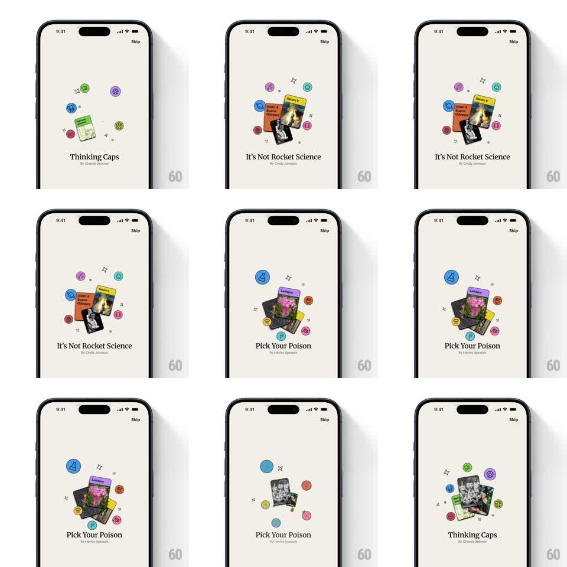

Media
Frame-by-frame

Rebuild this animation 1:1: Spark's onboarding carousel - a cluster of colorful circular icons and book cards collapses inward to a point, then springs back out as a new cluster around the next book stack, in step with the slide change.

Rebuild this animation 1:1: Spark's onboarding carousel - a cluster of colorful circular icons and book cards collapses inward to a point, then springs back out as a new cluster around the next book stack, in step with the slide change.
## Integration
Integration: stack-agnostic spec - springs given as stiffness/damping, timed motions as duration + curve; map every value to your framework and animation library of choice.
## Scene
Spark onboarding, cream: a centered collage of 2-3 stacked book/magazine cards ringed by ~8 small colored circular icons and sparkle marks; a title + byline below ("Thinking Caps" / "It's Not Rocket Science" / "Pick Your Poison"); a "Skip" link top-right.
## Motion spec
Pattern: collapse-in / spring-out element shuffle between carousel slides.
- Every 3s (or on swipe), the cluster collapses: every icon and card animates toward the cluster's center while scaling to ~0.3 and fading to 0 (250ms, ease-in), the outer icons arriving first, the book cards last.
- The title crossfades to the next slide's title during the collapse (200ms).
- The new cluster bursts out from the center: book cards spring from scale 0.3 -> 1 with rotation settling (~340/16, slight overshoot), then the icons pop out along radial paths to their ring positions (spring ~400/15, staggered 25ms, random +/-10px end jitter so no two clusters share a layout).
- Sparkle marks twinkle in last (scale 0 -> 1, 200ms each, 40ms apart).
- At rest, the whole cluster idles with a slow drift (translate +/-4px, 5s ease-in-out loop, icons out of phase).
## Calibration
- The collapse and burst share one center point - the cluster never wanders off-axis.
- Cards in each stack fan with fixed rotations (-8deg, 0deg, 7deg) and overlap ~60%.
## Reduced motion
Slides crossfade (300ms); cluster static.
## Don't miss
- Icons are flat filled circles with a single glyph each - no gradients, no shadows.
- The burst stagger runs center-outward: books, then icons, then sparkles.